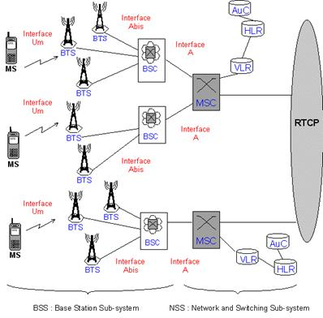
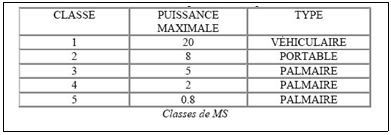

Un réseau GSM est constitué de trois sous-systèmes :
- le sous-système Radio BSS Base Station Sub-system
- le sous-système Réseau NSS Network and Switching Sub-system
- le sous-système d'exploitation OSS Operation Support Sub-system
Ainsi, on peut ainsi représenter schématiquement un réseau radiomobile de la manière suivante :

2.1 Mobile Station
La Mobile Station (MS)est composée du Mobile Equipment (le terminal GSM) et du Subscriber Identity Module (SIM), une petite carte douée de mémoire et de microprocesseur, qui sert à identifier l'abonné indépendamment du terminal employé; il est donc possible de continuer à recevoir et à émettre des appels et d'utiliser tous ces services simplement grâce à l'insertion de la carte SIM dans un terminal quelconque.
Mobile Equipment
Le Mobile Equipment est identifié (exclusivement) à l'intérieur de n'importe quel réseau GSM par l'International Mobile Equipment Identity (IMEI).
L'IMEI est un numéro à 15 chiffres qui présente la structure suivante: IMEI = TAC / FAC / SNR / sp
Où:
· TAC = Type Approval Code, déterminé par le corps central du GSM (6 chiffres)
· FAC = Final Assembly Code, identifie le constructeur (2 chiffres)
· SNR = Serial Number (6 chiffres)
· sp = Chiffre supplémentaire de réserve (1 chiffre)
Les terminaux GSM sont divisés en cinq classes en fonction de leur puissance maximale de transmission sur le canal radio, qui varie entre un maximum de 20 Watt et un minimum de 0.8
Watt. Le tableau suivant résume les caractéristiques de ces cinq classes.
La puissance de la MS détermine la capacité de cette dernière de s'éloigner des stations émetteurs/récepteurs (BTS) du réseau tout en continuant d'utiliser le service.
Une particularité de la MS consiste en la capacité de changer la puissance d'émission du signal sur le canal radio de façon dynamique sur 18 niveaux et ceci pour pouvoir conserver à tout instant la puissance de transmission optimale, en réduisant ainsi les interférences entre canaux, qui interviennent sur les cellules adjacentes, et les dépenses du terminal. Ces deux derniers aspects sont potentialisés par le Discontinuous Transmit (DTX) qui bloque la transmission lorsque l'utilisateur n'est pas en conversation grâce à la fonction Voice Activity Detection (VAD), qui vérifie la présence ou l'absence d'activité vocale. L'augmentation ou la diminution de la puissance du signal est transmise à la MS par la BSS qui fait de façon constante le monitorage de la qualité de la communication.
SIM
La carte SIM contient l'International Mobile Subscriber Identity (IMSI), qui sert à identifier l'abonné dans n'importe lequel des systèmes GSM, et les procédures de cryptographie qui sauvegardent le secret de l'information de l'utilisateur ainsi que d'autres données telles que, par
exemple, la mémoire alphanumérique du téléphone et la mémoire relative aux messages de texte
(SMS) et enfin les mots de passe qui empêchent l'utilisation interdite de la carte et l'accès à d'autres fonctions supplémentaires.
L'IMSI présente la structure suivante: MCC / MNC / MSIN
Où:
· MCC = Mobile Country Code (2 ou 3 chiffres, pour la France 33)
· MNC = Mobile Network Code (2 chiffres, en France 06)
· MSIN = Mobile Station Identification Number (maximum 10 chiffres)
2.1 Le sous-système radio BSS (Base Station Sub-system)
Sa fonction principale est la gestion de l'attribution des ressources radio, indépendamment des abonnés, de leur identité ou de leur communication. On distingue dans le BSS :
La station de base BTS (Base Transceiver Station)
La Base Transceiver Station contient tous les émetteurs-récepteurs appelés TRX reliés à la cellule et dont la fonction est de transmettre et recevoir des informations sur le canal radio en proposant une interface physique entre la Mobile Station et le BSC. La BTS exerce une série de fonctions décrites ci-après :
- Mesures des interférences sur les canaux non alloués à des communications (idle channels).
- Mesures sur la liaison montante (uplink), servant à l'algorithme de décision du handover.
- Calcul du Timing Advance (avance de temps) pour la synchronisation temporelle, selon la distance qui sépare la BTS du mobile.
- Détection des demandes d'accès des mobiles reçus sur le canal de contrôle commun (RACH).
- Détection des messages de handover access (HO ACCESS).
- La capacité de gérer les canaux Full Rate et Half Rate.
- La gestion de la Diversité d'Antennes, autrement dit l'utilisation de deux antennes de réception afin d'améliorer la qualité de signal reçu; les deux antennes reçoivent le même signal, indépendamment l'une de l'autre et sont atteintes différemment par le fading: la probabilité qu'elles soient atteintes en même temps par un fading important est presque nulle.
- La supervision du Rapport des Ondes Statiques (ROS) en antenne.
- Le Frequency Hopping (FH): la variation de fréquence utilisée dans un canal radio à des intervalles réguliers, afin d'améliorer la qualité du service à travers la diversité dans la fréquence.
- Discontinuous Transmission (DTX) soit dans le uplink que dans le downlink.
- Le Contrôle Dynamique de la Puissance (DPC) de la MS et des BTS: le BSC détermine la puissance optimale avec laquelle la MS et le BTS effectuent la transmission sur le canal radio
- (grâce à l'exploitation des relevés effectués par le MS et le BTS), dans le but d'améliorer l'efficacité du spectre.
- La gestion des algorithmes de chiffrage: l'information de l'utilisateur est cryptographiée afin de garantir à l'abonné une certaine réserve sur le canal du trafic et sur celui de codage. Le processus de cryptographie des données doit être mis en oeuvre par le BTS sur les informations transmises sur le canal radio; l'algorithme de cryptographie qui doit être utilisé est transmis au BTS par le BSC sur la base des indications reçues par le MSC et la clef cryptographique est unique pour chaque utilisateur. Le standard GSM Phase II supporte 8 algorithmes de chiffrage.
- Le monitorage de la connexion radio se fait en relevant les signaux radiofréquences, ces relevés sont ensuite envoyés au BSC pour l'élaboration afin d'assurer un haut niveau de qualité à la communication radio.
Le contrôleur de station de n Controller gère les ressources radio pour une ou plusieurs BTS, à travers le monitorage de la connexion entre la BTS et les MSC (il s'agit de centrales de commutation qui offrent la liaison au réseau fixe ou à d'autres réseaux), et, aussi, à travers les canaux radio, le codage, le frequency hopping et les handovers. Il permet plus précisément :
- La gestion et la configuration du canal radio : il doit choisir pour chaque appel la cellule la mieux adaptée et doit sélectionner à l'intérieur de celle-ci le canal radio le plus adapté à la mise en route de la communication.
- La gestion de handover intra BSC : il décide, sur la base des relevés reçus par la BTS, le moment pour effectuer le handover, autrement dit, le changement de cellule lors des déplacements de l'utilisateur pendant une conversation, à l'intérieur de la surface de couverture de sa compétence.
- Les fonctions de décodage des canaux radio Full Rate (16 kbps) ou Half Rate (8 kbps) pour des canaux à 64 kbps.
2.2 Le sous-système réseau NSS (Network Station Sub-system)
Il assure principalement les fonctions de commutation et de routage. C'est donc lui qui permet l'accès au réseau public RTCP ou RNIS. En plus des fonctions indispensables de commutation, on y retrouve les fonctions de gestion de la mobilité, de la sécurité et de la confidentialité qui sont implantées dans la norme GSM.
Le MSC (Mobile Services Switching Center)
Le Mobile Switching Centre (MSC) est l'élément central du NSS. Il gère grâce aux informations reçues par le HLR et le VLR, la mise en route et la gestion du codage de tous les appels directs et en provenance de différents types de réseau tels que PSTN, ISDN, PLMN et PDN. Il développe aussi la fonctionnalité du gateway face aux autres composants du système et de la gestion des processus de handover, et il assure la commutation des appels en cours entre des BSC différents ou vers un autre MSC.
A l'intérieur de la surface de service on peut retrouver plusieurs MSC et chacun d'entre eux est responsable de la gestion du trafic d'un ou de plusieurs BSS et à partir du moment ou les usagers se déplacent sur toute la surface de couverture, les MSC doivent être capables de gérer un nombre d'utilisateurs variables quant à la typologie et à la quantité et être capables d'assurer à chacun un niveau de service constant.
D'autres fonctions fondamentales du MSC sont décrites ci-après :
- L'authentification de l'auteur de l'appel: l'identification de la MS à l'origine de l'appel est nécessaire pour déterminer si l'utilisateur est en droit de bénéficier du service.
- La discrétion quant à l'identité de l'utilisateur, pour pouvoir garantir la réserve sur son identité sur le canal radio, même si toutes les informations sont cryptographiées, le système se garde toujours de transmettre l'IMSI attribué lors de la signature du contrat par l'usager; par contre l'on attribue le Temporary Mobile Subscriber Identity (TMSI), au moment de l'appel car il ne présente qu'une utilité temporaire : le MSC a aussi pour mission de mettre en relation le TMSI
et le IMSI et lorsque le mobile se déplace sur l'aire de location contrôlée par un autre MSC, il doit lui attribuer un nouveau TMSI.
- Le processus de handover: Un utilisateur peut, sur le réseau GSM, continuer d'utiliser le service même quand, pendant une conversation, il franchit les limites de la cellule dans laquelle il se trouve. Il peut se présenter deux cas:
1. La MS se déplace dans une cellule contrôlée toujours par le même MSC; dans ce cas le processus de handover est géré par le même MSC.
2. La nouvelle cellule dans laquelle la MS évolue, est sous le contrôle d'un autre MSC; dans le cas présent le processus de handover est effectué par deux MSC sur la base des relevés du signal effectués par les BTS récepteurs de la MS.
Le HLR (Home Location Register)
Lorsqu'un utilisateur souscrit à un nouvel abonnement au réseau GSM, toutes les informations qui concernent son identification sont mémorisées sur le HLR. Il a pour mission de communiquer au VLR quelques données relatives aux abonnés, à partir du moment où ces derniers se déplacent d'une location area à une autre. A l'intérieur du HLR les abonnés sont identifiés comme suit : MSISDN = CC / NDC / SN
Où :
- CC = Country Code, indicatif international (le CC français est 33)
- NDC = National Destination Code, indicatif national de l'abonné sans le zéro
- SN = Subscriber Number, numéro qui identifie l'utilisateur mobile
L'Home Location Register (HLR) est une base de données qui peut être soit unique pour tout le réseau soit distribuée dans le système; il peut ainsi y avoir des MSC privés de HLR, mais connectés à celle d'autres MSC. Dans le cas où il existe plusieurs HLR, chacun d'eux se voit attribuer une aire de numérotation c'est à dire un ensemble de Mobile Station ISDN Number
(MSISDN). Le MSISDN identifie exclusivement un abonnement d'un téléphone mobile sur le plan de numérotation du réseau public international commuté.
Le HLR, comme toutes les autres bases des données que l'on va examiner par la suite, est inséré dans des stations de travail dont les services (mémoire, processeurs, capacité des disques) peuvent être mis à jour au fur et à mesure de l'augmentation du nombre d'abonnés. Il contient toutes les données relatives aux abonnés et ses informations détaillées :
Les informations de type permanent :
- L'International Mobile Subscriber Identity (IMSI), information qu'identifie exclusivement l'abonné à l'intérieur de tout réseau GSM et qui se trouve aussi bien dans la carte SIM.
- Le Mobile Station ISDN Number (MSISDN).
- Tous le services auxquels l'abonné a souscrit et auxquels il est capable d'accéder (voix, service de donnés, SMS, éventuels verrouillages des appels internationaux, et d'autres services complémentaires).
Les informations de type dynamique :
- La position courante de la station mobile MS, autrement dit l'adresse de VLR sur lequel elle a été enregistrée.
- Eventuellement la situation d'un certain nombre de services auxiliaires.
Si l'on veut résumer, les fonctions exercées par le HLR sont :
- La sécurité : dialogue avec l'AUC et le VLR.
- L'enregistrement de la position : dialogue avec le VL ue avec le MSC.
- La gestion des données relatives à l'abonné : dialogue avec l'OMC et le VLR.
Le VLR (Visitor Location Register)
Le Visitor Location Register (VLR) est une base de données qui mémorise de façon temporaire les données concernant tous les abonnés qui appartiennent à la surface géographique qu'elle contrôle. Ces données sont réclamées à l'HLR auquel l'abonné appartient. Généralement pour simplifier les données réclamées et ainsi la structure du système, les constructeurs installent le VLR et le MSC côte à côte, de telle sorte que la surface géographique contrôlée par le MSC et celle contrôlée par le VLR correspondent.
Plus précisément il contient les informations suivantes :
- Temporary Mobile Subscriber Identity (TMSI), il est employé comme garant de la sécurité du
- IMSI, et il est attribué à chaque changement de LA.
- La condition de la MS (en veille, occupée, éteinte)
- L'état des services complémentaires comme Call Waiting, Call Divert, Call Barring, etc.
- Les types de services auxquels l'abonné à souscrit et auxquels il a droit d'accès (voix, service de données, SMS, d'autres services auxiliaires).
- La Location Area Identity (LAI) qui comprend la MS faisant partie du groupe contrôlé par le MSC/VLR.
L'AuC (Authentication Center)
Le Centre d'authentification est une fonction du système qui a pour but de vérifier si le service est demandé par un abonné autorisé, et ceci en fournissant soit les codes pour l'authentification que pour le chiffrage.
Le mécanisme d' authentification vérifie la légitimité de la SIM sans transmettre, pour autant, sur le canal radio les informations personnelles de l'abonné, telles le IMSI et la clef de chiffrage dans le but de vérifier si l'abonné qui essaye d'accéder au service est autorisé et n'est pas abusif; le chiffrage par contre génère quelques codes secrets qui serviront pour cryptographier tous les échanges qui ont lieu sur le canal radio. Les codes d'authentification et de chiffrage sont obtenus par hasard pour chaque abonné grâce à quelques ensembles d'algorithmes définis par le standard et sont mémorisés soit sur l'AUC que sur la SIM.
L'authentification se fait de façon systématique chaque fois que la MS se connecte au réseau et plus précisément dans les cas suivants :
- Chaque fois que la MS reçoit ou émet un appel.
- A chaque mise à jour de la position de la MS (location updating).
- A chaque demande de mise en activité, de cessation d'activité ou de l'utilisation des services supplémentaires.
L'AUC peut être installé aussi comme une application différente dans la même station de travail qui contient l'HLR, qui est le seul élément du système avec lequel il est relié et peut échanger, et qui plus est, il ne peut pas être géré de loin pour de raisons de sécurité.
2.3 Le sous-système opérationnel OSS (Operating Sub-System)
Il assure la gestion et la supervision du réseau. C'est la fonction dont l'implémentation est laissée avec le plus de liberté dans la norme GSM. La supervision du réseau intervient à de nombreux niveaux :
- Détection de pannes.
- Mise en service de sites.
- Modification de paramétrage.
- Réalisation de statistiques.
Dans les OMC (Operation and Maintenance Center), on distingue l'OMC/R (Radio) qui est relié à toutes les entités du BSS, à travers les BSC, l'OMC/S (System) qui est relié au sous système NSS à travers les MSC. Enfin l'OMC/M (Maintenance) contrôle l'OMC/R et l'OMC/S.
2.4 Les interfaces
L'interface Um
C'est l'interface entre les deux sous systèmes MS et la BTS. On la nomme couramment "interface radio" ou "interface air".
L'interface Abis
C'est l'interface entre les deux composants du sous système BSS : la BTS (Base Station
Transceiver) et le BSC (Base Station Controler).
L'interface A
C'est l'interface entre les deux sous systèmes BSS (Base Station Sub System) et le NSS (Network
Sub System).
Révisé le :25-10-2017 | ©2007 www.technologuepro.com